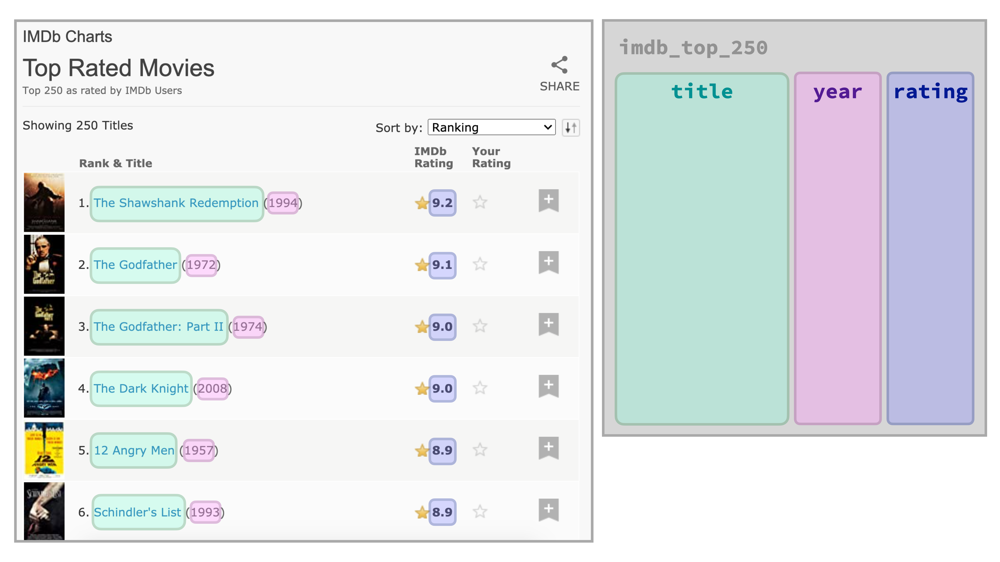
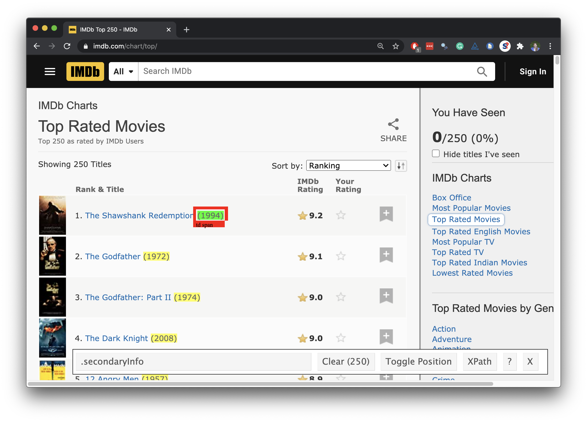

Scraping top 250 movies on IMDB
Data Science in a Box
layout: true
class: middle
Top 250 movies on IMDB
Top 250 movies on IMDB
Take a look at the source code, look for the tag table tag:
http://www.imdb.com/chart/top
.pull-left[] .pull-right[]
First check if you’re allowed!
library(robotstxt)
paths_allowed("http://www.imdb.com")[1] TRUEvs. e.g.
paths_allowed("http://www.facebook.com")[1] FALSEPlan

Plan
Read the whole page
Scrape movie titles and save as
titlesScrape years movies were made in and save as
yearsScrape IMDB ratings and save as
ratingsCreate a data frame called
imdb_top_250with variablestitle,year, andrating
class: middle
Step 1. Read the whole page
Read the whole page
page <- read_html("https://www.imdb.com/chart/top/")
page{html_document}
<html xmlns:og="http://ogp.me/ns#" xmlns:fb="http://www.facebook.com/2008/fbml">
[1] <head>\n<meta http-equiv="Content-Type" content="text/html ...
[2] <body id="styleguide-v2" class="fixed">\n <img ...A webpage in R
- Result is a list with 2 elements
typeof(page)[1] "list"–
- that we need to convert to something more familiar, like a data frame….
class(page)[1] "xml_document" "xml_node" class: middle
Step 2. Scrape movie titles and save as titles
Scrape movie titles

Scrape the nodes
.pull-left[] .pull-right[]
Extract the text from the nodes
.pull-left[] .pull-right[]
Save as titles
.pull-left[] .pull-right[]
class: middle
Step 3. Scrape year movies were made and save as years
Scrape years movies were made in

Scrape the nodes
.pull-left[] .pull-right[]
Extract the text from the nodes
.pull-left[] .pull-right[]
Clean up the text
We need to go from "(1994)" to 1994:
Remove
(and): string manipulationConvert to numeric:
as.numeric()
stringr
.pull-left-wide[ - stringr provides a cohesive set of functions designed to make working with strings as easy as possible - Functions in stringr start with str_*(), e.g. - str_remove() to remove a pattern from a string] .pull-right-narrow[]
Clean up the text
page %>%
html_nodes(".secondaryInfo") %>%
html_text() %>%
str_remove("\\(") # remove ( [1] "1994)" "1972)" "2008)" "1974)" "1957)" "1993)" "2003)"
[8] "1994)" "2001)" "1966)" "1994)" "1999)" "2010)" "2002)"
[15] "1980)" "1999)" "1990)" "1975)" "1995)" "1954)" "1946)"
[22] "1991)" "2002)" "1998)" "1997)" "1999)" "2014)" "1977)"
[29] "1991)" "1985)" "2001)" "1960)" "2002)" "1994)" "2019)"
[36] "1994)" "2000)" "1998)" "2006)" "1995)" "2006)" "1942)"
[43] "2014)" "2011)" "1988)" "1962)" "1936)" "1968)" "1954)"
[50] "1979)" "1931)" "1988)" "1979)" "2000)" "1981)" "2012)"
[57] "2008)" "2006)" "1950)" "1957)" "1980)" "1940)" "1957)"
[64] "2018)" "1986)" "1999)" "2022)" "2018)" "1964)" "2012)"
[71] "2003)" "2019)" "1984)" "1995)" "1995)" "2017)" "2009)"
[78] "1981)" "2019)" "1997)" "1984)" "1997)" "2016)" "2000)"
[85] "2010)" "1952)" "2009)" "1963)" "1983)" "1968)" "2004)"
[92] "1992)" "2018)" "2012)" "1962)" "1941)" "1931)" "1959)"
[99] "1985)" "1958)" "2001)" "1971)" "1944)" "1960)" "1987)"
...Clean up the text
page %>%
html_nodes(".secondaryInfo") %>%
html_text() %>%
str_remove("\\(") %>% # remove (
str_remove("\\)") # remove ) [1] "1994" "1972" "2008" "1974" "1957" "1993" "2003" "1994"
[9] "2001" "1966" "1994" "1999" "2010" "2002" "1980" "1999"
[17] "1990" "1975" "1995" "1954" "1946" "1991" "2002" "1998"
[25] "1997" "1999" "2014" "1977" "1991" "1985" "2001" "1960"
[33] "2002" "1994" "2019" "1994" "2000" "1998" "2006" "1995"
[41] "2006" "1942" "2014" "2011" "1988" "1962" "1936" "1968"
[49] "1954" "1979" "1931" "1988" "1979" "2000" "1981" "2012"
[57] "2008" "2006" "1950" "1957" "1980" "1940" "1957" "2018"
[65] "1986" "1999" "2022" "2018" "1964" "2012" "2003" "2019"
[73] "1984" "1995" "1995" "2017" "2009" "1981" "2019" "1997"
[81] "1984" "1997" "2016" "2000" "2010" "1952" "2009" "1963"
[89] "1983" "1968" "2004" "1992" "2018" "2012" "1962" "1941"
[97] "1931" "1959" "1985" "1958" "2001" "1971" "1944" "1960"
[105] "1987" "1952" "1983" "1962" "1973" "2020" "1976" "1995"
...Convert to numeric
page %>%
html_nodes(".secondaryInfo") %>%
html_text() %>%
str_remove("\\(") %>% # remove (
str_remove("\\)") %>% # remove )
as.numeric() [1] 1994 1972 2008 1974 1957 1993 2003 1994 2001 1966 1994 1999
[13] 2010 2002 1980 1999 1990 1975 1995 1954 1946 1991 2002 1998
[25] 1997 1999 2014 1977 1991 1985 2001 1960 2002 1994 2019 1994
[37] 2000 1998 2006 1995 2006 1942 2014 2011 1988 1962 1936 1968
[49] 1954 1979 1931 1988 1979 2000 1981 2012 2008 2006 1950 1957
[61] 1980 1940 1957 2018 1986 1999 2022 2018 1964 2012 2003 2019
[73] 1984 1995 1995 2017 2009 1981 2019 1997 1984 1997 2016 2000
[85] 2010 1952 2009 1963 1983 1968 2004 1992 2018 2012 1962 1941
[97] 1931 1959 1985 1958 2001 1971 1944 1960 1987 1952 1983 1962
[109] 1973 2020 1976 1995 2009 2010 1997 2011 1927 1988 2000 1948
[121] 1989 2019 2007 2004 1965 2005 2016 1921 1959 1950 2020 2018
[133] 2013 1961 1985 1995 2021 1992 2006 2007 1998 1999 2001 1975
[145] 1961 1948 2010 1993 1950 1963 2003 2007 2003 1980 1974 1980
...Save as years
.pull-left[] .pull-right[]
class: middle
Step 4. Scrape IMDB ratings and save as ratings
Scrape IMDB ratings

Scrape the nodes
.pull-left[] .pull-right[]
Extract the text from the nodes
.pull-left[] .pull-right[]
Convert to numeric
.pull-left[] .pull-right[]
Save as ratings
.pull-left[] .pull-right[]
class: middle
Step 5. Create a data frame called imdb_top_250
Create a data frame: imdb_top_250
imdb_top_250 <- tibble(
title = titles,
year = years,
rating = ratings
)
imdb_top_250# A tibble: 250 x 3
title year rating
<chr> <dbl> <dbl>
1 The Shawshank Redemption 1994 9.2
2 The Godfather 1972 9.2
3 The Dark Knight 2008 9
4 The Godfather Part II 1974 9
5 12 Angry Men 1957 8.9
6 Schindler's List 1993 8.9
# ... with 244 more rowsClean up / enhance
May or may not be a lot of work depending on how messy the data are
- See if you like what you got:
glimpse(imdb_top_250)Rows: 250
Columns: 3
$ title <chr> "The Shawshank Redemption", "The Godfather", "Th~
$ year <dbl> 1994, 1972, 2008, 1974, 1957, 1993, 2003, 1994, ~
$ rating <dbl> 9.2, 9.2, 9.0, 9.0, 8.9, 8.9, 8.9, 8.8, 8.8, 8.8~- Add a variable for rank
imdb_top_250 <- imdb_top_250 %>%
mutate(rank = 1:nrow(imdb_top_250)) %>%
relocate(rank)# A tibble: 250 x 4
rank title year rating
<int> <chr> <dbl> <dbl>
1 1 The Shawshank Redemption 1994 9.2
2 2 The Godfather 1972 9.2
3 3 The Dark Knight 2008 9
4 4 The Godfather Part II 1974 9
5 5 12 Angry Men 1957 8.9
6 6 Schindler's List 1993 8.9
7 7 The Lord of the Rings: The Return of the K~ 2003 8.9
8 8 Pulp Fiction 1994 8.8
9 9 The Lord of the Rings: The Fellowship of t~ 2001 8.8
10 10 The Good, the Bad and the Ugly 1966 8.8
11 11 Forrest Gump 1994 8.8
12 12 Fight Club 1999 8.7
13 13 Inception 2010 8.7
14 14 The Lord of the Rings: The Two Towers 2002 8.7
15 15 Star Wars: Episode V - The Empire Strikes ~ 1980 8.7
16 16 The Matrix 1999 8.7
17 17 Goodfellas 1990 8.7
18 18 One Flew Over the Cuckoo's Nest 1975 8.6
19 19 Se7en 1995 8.6
20 20 Seven Samurai 1954 8.6
# ... with 230 more rowsclass: middle
What next?
.question[ Which years have the most movies on the list?]
–
imdb_top_250 %>%
count(year, sort = TRUE)# A tibble: 86 x 2
year n
<dbl> <int>
1 1995 8
2 2004 7
3 1957 6
4 1999 6
5 2003 6
6 2009 6
# ... with 80 more rows.question[ Which 1995 movies made the list?]
–
imdb_top_250 %>%
filter(year == 1995) %>%
print(n = 8)# A tibble: 8 x 4
rank title year rating
<int> <chr> <dbl> <dbl>
1 19 Se7en 1995 8.6
2 40 The Usual Suspects 1995 8.5
3 74 Braveheart 1995 8.3
4 75 Toy Story 1995 8.3
5 112 Heat 1995 8.2
6 136 Casino 1995 8.2
7 180 Before Sunrise 1995 8.1
8 238 La Haine 1995 8 .question[ Visualize the average yearly rating for movies that made it on the top 250 list over time.]
–
.panelset[ .panel[.panel-name[Plot]] .panel[.panel-name[Code]]]